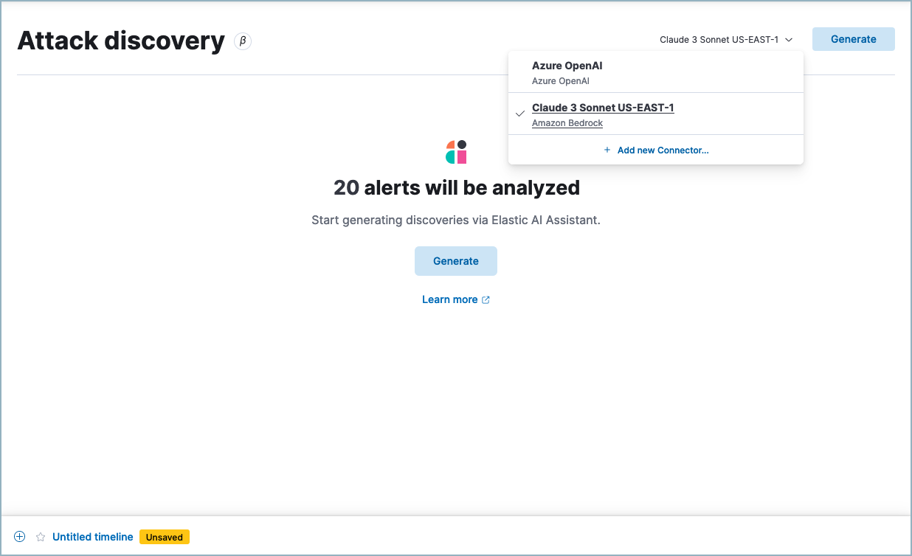

Attack discoveryedit
This functionality is in beta and is subject to change. The design and code is less mature than official GA features and is being provided as-is with no warranties. Beta features are not subject to the support SLA of official GA features.
This feature is available starting with Elastic Security version 8.14.0.
Attack discovery leverages large language models (LLMs) to analyze alerts in your environment and identify threats. Each "discovery" represents a potential attack and describes relationships among multiple alerts to tell you which users and hosts are involved, how alerts correspond to the MITRE ATT&CK matrix, and which threat actor might be responsible. This makes the most of each security analyst’s time, helps fight alert fatigue, and can reduce your mean time to respond.
Attack discovery currently only analyzes alerts from the past 24 hours.
This page describes:
Generate discoveriesedit
To use Attack discovery:
- Click the Attack discovery page from Elastic Security’s navigation menu.
-
When you open the page for the first time, you’ll need to select an LLM connector before you can analyze alerts. Select an existing connector from the dropdown menu, or add a new one.
Attack discovery uses the same LLM connectors as Elastic AI Assistant. If you’ve already configured one, you can use it here without further configuration. In general, models with larger context windows are more effective for Attack discovery.
 - Once you’ve selected a connector, click Generate to start the analysis.
It may take from a few seconds up to several minutes to generate discoveries, depending on the number of alerts and the model you selected.
Attack discovery uses the same data anonymization settings as Elastic AI Assistant. To configure which alert fields are sent to the LLM and which of those fields are obfuscated, use the Elastic AI Assistant settings. Consider the privacy policies of third-party LLMs before sending them sensitive data.
Once the analysis is complete, any threats it identifies will appear as discoveries. Click each one’s title to expand or collapse it. Click Generate at any time to start the Attack discovery process again with the most current alerts.
What information does each discovery include?edit
Each discovery includes the following information describing the potential threat, generated by the connected LLM:
- A descriptive title and a summary of the potential threat.
- The number of associated alerts and which parts of the MITRE ATT&CK matrix they correspond to.
- The implicated entities (users and hosts), and what suspicious activity was observed for each.

Incorporate discoveries with other workflowsedit
There are several ways you can incorporate discoveries into your Elastic Security workflows:
- Click an entity’s name to open the user or host details flyout and view more details that may be relevant to your investigation.
-
Hover over an entity’s name to either add the entity to Timeline (
 ) or copy its field name and value to the clipboard (
) or copy its field name and value to the clipboard ( ).
).
- Click Take action, then select Add to new case or Add to existing case to add a discovery to a case. This makes it easy to share the information with your team and other stakeholders.
- Click Investigate in timeline to explore the discovery in Timeline.
- Click View in AI Assistant to attach the discovery to a conversation with AI Assistant. You can then ask follow-up questions about the discovery or associated alerts.